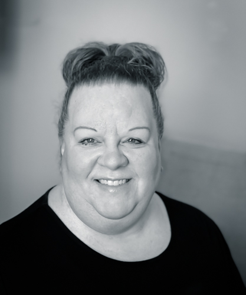

Kristina Thompson | WDD 130
My name is Kristina Thompson and I live in Layton, Utah. I am just starting school again and am working on a Professional Studies Bachelor's Degree. I'm looking forward to learning all the skills I need to create a website for my small business. My husband and I have two boys, ages 17 and 8. Having kids that far apart in age can be challenging and times, but it's also fun to see them interact with each other as a kid and almost adult. We have a dog named Finley and everyone loves him. Something interesting about me is that I was born in a car. Luckily, even though it was December, I was born in Arizona so it wasn't too cold. Some of my hobbies include photography and baking. I live in a household of Lego lovers, so I also enjoy doing that with my boys. I play the piano and organ, so my callings at church often revolve around that talent. One of my favorite places to travel to is Rockaway Beach, Oregon. We go there for Spring Break whenever it fits into our schedule.